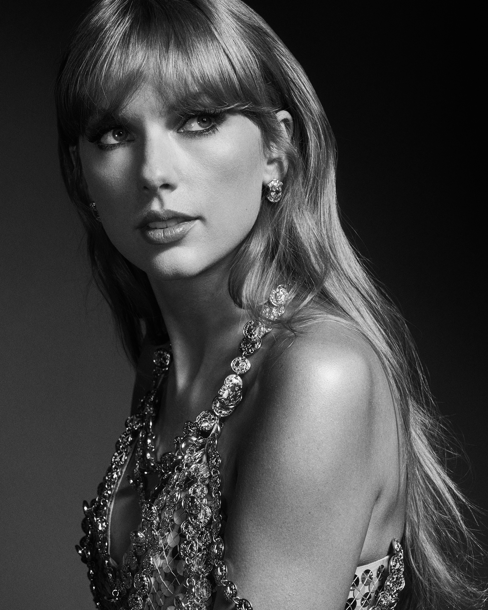
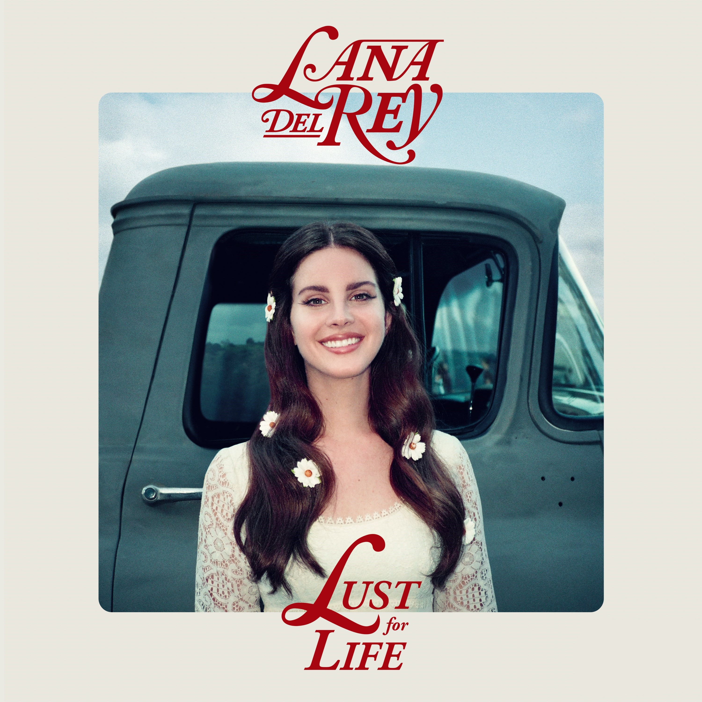
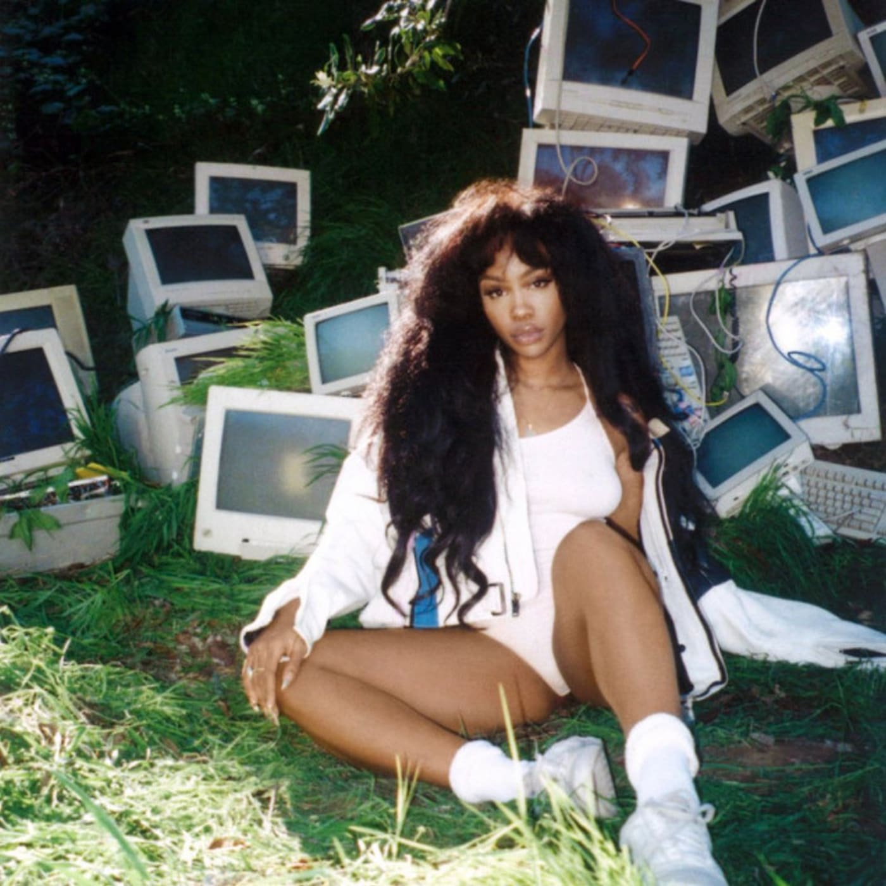

Taylor's Section üߣ
Taylor Swift is one of my all time favorite artists. I admire her lyricism, authenicity, and overall support of women in all aspects. Taylor has released so many studio albums, each signifying different eras or mindsets she has as she gets older. There's an album for every emotion and stage of life possible, making Taylor's music so versatile. My top songs are Love Story (Taylor's Version), I Did Something Bad, My Tears Ricochet, Mirrorball, Illicit Affairs, and Champagne Problems ü•Ç
Back to Top

Lauryn Hill üéº
Lauryn Hill is one of my top tier artists, I grew up with Lauryn because she was one of my mother's favorites. Her music touches so many topics but she is most known for her contribution to black culture and using her voice to speak on black issues. Lauryn Hill is categorized with Erykah Badu as the queen of neo-soul and has gone down as a cultural icon. Since retired, she has separaetd herself from the music industry, but her album "The Miseducation of Lauryn Hill" goes down in history for winning 9 awards, including 2 grammys. My favorite songs include Doo Wop, When It Hurts So Bad, Mr. Intentional, Ex-Factor, and Lost Ones üéπ.
Back to Top

Lana's Section üçí
Lana Del Rey is another one of my favorite artists, falling under the genre of indie. Lana's music is truly reflective of womanhood and it's struggle, as well as it's beauty. I find Lana to be incredibly raw and authentic with her music and though she's much less involved now in the industry, her songs such as The Other Woman, Violets for Roses, Brooklyn Baby, Blue Jeans, Young and Beautiful, and Dealer üíø
Back to Top

SZA üåû
Lastly, SZA has been a more recent listen for me. SZA has a pretty short discography, so I've always known her popular hits such as All the Stars featuring Kendrick Lamar or Good Days. Over the summer however, I got into more of her less known songs and I find SZA's music to be so calming, to the point where it's changed my perspective on life. Her genre is R&B/Soul and her music is all about healing through your insecurities, heartbreak, and failure. My favorite songs are Drew Barrymore, Supermodel, Prom, and Doves in the Wind.
Back to Top
